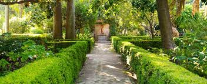

La propiedad ocupa 7 244,74 m², y el jardín 6500 m². Antiguamente ocupaba toda la manzana.
El museo tiene 12 salas de exposiciones y se accede al mismo por la avenida Juramento 2291.
La manzana que ocupa (entre la avenida Juramento, donde está su entrada principal, y las calles Vuelta de Obligado, Cuba y Mendoza) forma parte del espléndido “decorado” edilicio que caracteriza esa zona del barrio de Belgrano, junto con el Museo Histórico Sarmiento y la parroquia de la Inmaculada Concepción (La Redonda), construidos en 1872 y 1878. A una cuadra del edificio, se encuentra el cruce de las avenidas Cabildo y Juramento, el cual constituye históricamente el centro de la zona comercial de Belgrano.
En la reestructuración de la casa, realizada en 1916, se dotó a la construcción de un ancho portal de madera a tableros, coronado con molduras y ornamentos peruanos, y una puerta verde adintelada, a dos hojas, con arco escarzano, que se abre aparte de la carpintería general. El pórtico barroco imita al de la ya desaparecida Casa Basavilbaso, conocida como Aduana Vieja.
Las ventanas poseen guardapolvos rectos y cortinas de tablillas horizontales unidas que, por medio de unas pequeñas cadenas, pueden ser recogidas en la parte superior. Las rejas son de hierro voladizo.
Los muros son blancos, rematados con tejas de gambas.
La casa está ambientada con criterio historicista, como si se tratara de un palacio renacentista.
En oportunidad de realizar Larreta un servicio diplomático en Francia, trajo al país una colección de obras de arte de origen español para ambientar su nuevo hogar. De esta manera se logró que el interior de la casa reproduzca estéticamente la España del Renacimiento.
En la actualidad el guion museológico aborda la figura de Enrique Larreta desde sus múltiples facetas: el escritor y su novela histórica La gloria de Don Ramiro. Una vida en tiempos de Felipe II (1908), el diplomático y su vida como embajador en Francia, y el coleccionista junto a su colección de arte español centrada en los siglos XVI y XVII que incluye pinturas, esculturas, mobiliario, cerámica, además del espacio arquitectónico elegido para albergarla. El recorrido está organizado a partir de diferentes ejes temáticos que dan cuenta de la resignificación y la vigencia que adquieren en nuestros días los asuntos planteados por Larreta, como la diversidad cultural, la religión y el poder. Se destaca también el valor artístico de obras medievales, renacentistas y barrocas, como el Retablo en Honor a Santa Ana realizado en 1503 por el maestro de Sinovas, ejemplo del estilo gótico tardío que floreció en España en la época de los Reyes Católicos; el altorrelieve de Jesús en el Monte de los Olivos, del taller de Alonso de Berruguete o los retratos de corte, del taller de Alonso Sánchez Coello. Especial mención merece el Retrato de Enrique Larreta, pintado por Ignacio Zuloaga en París en 1912, que representa al escritor con el fondo de la ciudad de Ávila, escenario principal de su novela.
Hay obras de arte, imágenes religiosas, tallas de madera, retablos policromados (el más llamativo es el realizado en honor a Santa Ana), muebles fraileros y tallas de madera. Entre estas últimas se destaca la del Patrono de la Ciudad de Buenos Aires, San Martín de Tours que posee dos metros de altura.
Hay además piezas relacionadas con la nobleza y con la guerra, como diversas armas y armaduras.
En el museo funciona además la biblioteca «Alfonso El Sabio», especializada en literatura española. Su anexo, denominado «La Casita de Arriba», está dedicado a la literatura infantil.
"Todos los jardines nacen con una idea .En este caso, la trajo Larreta cuando viajó a La Alhambra, Granada, y la usó al reformar su casa"3 –cuenta Sturla el jardinero de la casa desde hace 28 años.
>Uno de los atractivos principales de este museo es su frondoso jardín andaluz, que de por sí merece una visita.
Tres ventanas de reja, abiertas, permiten verlo desde el exterior. Único en su tipo en Sudamérica, ha sido diseñado según la tradición hispano-islámica, como un lugar para la meditación. Es un muestrario de ideas, símbolos y tradiciones que se remontan a la Edad Media.4 Dicen los entendidos que hasta resulta difícil de encontrar uno de tan buen gusto y bien ornamentado, incluso, en España.1
El pórtico de acceso al jardín está adornado con pequeñas cerámicas granadinas cuadradas, blancas y azules, que se intercalan con las baldosas color ladrillo. Las paredes forman arcadas y unos macetones de gran tamaño contienen distintas clases de plantas con flores.
Una escalinata sirve de acceso al sendero que conduce a la «fuente de los sapos» y a la escultura en granito «De reojo», obra de Pablo Larreta. Los arbustos de plantas de boj se extienden por un total de 701 metros lineales, dibujando un camino laberíntico y dividiendo el jardín en sectores (llamados «eras») donde las plantas crecen como si el hombre no interviniera en su desarrollo.
En la esquina de Juramento y Cuba, puede observarse una pérgola con una glicina de más de un siglo de vida.
Como todo jardín hispano musulmán, se busca que el oído se satisfaga con el murmullo de las pequeñas fuentes de agua, el olfato con el perfume de las flores y el tacto con la variedad de brisas y las diversas texturas del piso, conformado por baldosas, ladrillos, tierra y ripio.
Los árabes concibieron los jardines como antítesis del desierto, plano e infértil. Por eso, remiten a pedacitos de selvas vírgenes, enmarcadas por cuadrículas. Dentro de ellas, las plantas deben crecer del modo más natural posible. Los laberintos son angostos, rectos, diseñados para una caminata solitaria o de a dos
Se encuentran diversas especies exóticas y nativas de plantas: la mencionada glicina, un ciprés, palmeras, un palo borracho y el naranjo amargo, común en los jardines españoles. También existe en él una estatua, réplica en terracota, del David de Donatello.
En primavera suele utilizase el jardín para conciertos al aire libre y exposiciones. Se puede acceder a él en forma libre y gratuita, y hay visitas guiadas los sábados.
